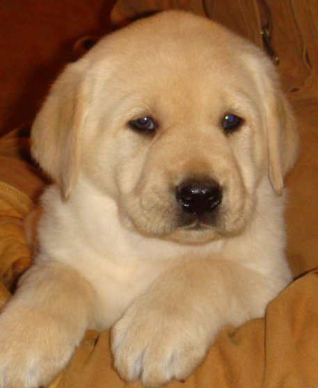

About Me

My name is Al Young and I am currently enrolled as a student in UW's coding bootcamp. I graduated from the University of Washington in 1993 with a Bachelor of Arts in Communications with a concentration in PR. After graduation, through self study, I acquired my Microsoft Certified Professional certifications in several disciplines under the Windows NT Platform. With these certifications, I embarked on a career as a network professional. Initially, I worked on a contract basis as a networking consultant, completing jobs for the Pemco Financial & Weyerhauser, before ending up at the Metropolitan King County Council as a contracted Network Support Agent. After a period of time, I was hired on as the full-time Network Administrator for the King County Council.
After working for about 5 yrs for the King County Council, I decided to embark on an adventure and moved to Colorado, where I spent two years pursuing my passion for snowboarding. I spent one season at Winter Park & one season at Copper Mountain. This was an incredibly enjoyable time in my life and a nice respite, but not really a sustainable lifestyle financially.
From Colorado, I decided to settle in Chicago at which time I decided to go into small business for myself. I opened up the first Dog Daycare in the Western Suburbs of Chicago. I built up an amazing client base and brought the business to profitability in the first year. After owning/running the business for 3 years, I was approached by two different parties with competing offers to buy my business. At the time, I was already of the mindset that I would either sell the business or expand with more locations/services. Because of the competing offers, the right decision for me at the time was to go ahead and sell the business.
After I sold my business, I became a licensed real estate broker in the state of Illinois. I sold and invested in, residential and commercial real estate at RE/MAX of Naperville & Charles Rutenberg Realty. This continued for the better part of a decade before moving back to the Seattle area. My enrollment in UW Coding bootcamp is hopefully, the beginning of my transition back into a tech-industry job, and the start of my career as a full-stack web developer.